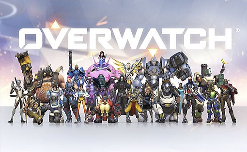
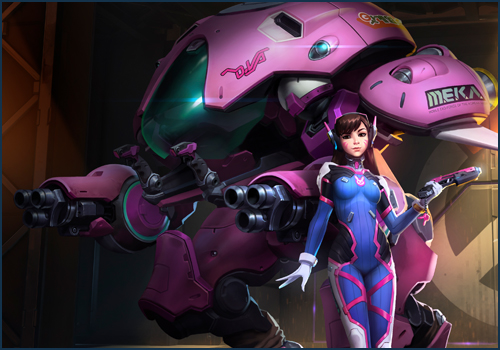

OverWatch

אם הייתי צריך להגיד על איזה משחק בזבזתי הכי הרבה שעות בחיי, אז זה על זה. אוורוואץ' הוא משחק יוצא דופן. כיום אני משחק במשחק הזה עם חברים שהכרתי מהילדות ואפילו חברים שהכרתי פה בלימודים. אפילו בין הפסקות לכתוב ולעצב את האתר אני עוצר לרענון של משחק או שתיים. במשחק אתה נכנס לזירה(איזו שהיא עיר בעולם) ואתם קבוצה של 6 אנשים נגד 6 אחרים, כל ה12 לחצו על כפתור הלמצוא משחק באותו זמן שאת\אתה לחצם ויאללה למשימה. המשימות מגוונות ונעות בין לרוץ אחרי קרון של רכבת עם דברים שצריך להגן\להשמיד(תלוי באיזו קבוצה אתה) ועד סתם להרוג אחד את השני..
יש עשרות דמויות שונות עם יכולות שונות , האהוב עלי ביותר היא דמות של נערה שנמצאת בתוך רובוט שמגן עליה רוב הזמן, אבל ברגע שהרובוט נהרס היא פגיעה לחלוטין. במשחק יש מקצועות מסויימים שאנשים חייבים לאייש, כמו לדוגמא מישהו עם הרבה נקודות חיים וגדול, שיכול להשאר במטרה הרבה זמן מבלי שיחסלו אותו, או מישהו שמעלה לשחקנים בחזרה את נקודות החיים.

בכל מקרה, דיוה משחקת את הרול של מי שיש לו הרבה חיים כמו שבטח הבנתם מהרובוט שלה. אחת מהיכולות שלה זה לירות טילים קטנים שמיירטים את כל מה שיורים לעבר חבריך לקבוצה. אם משתמשים ביכולות הזאת נכון אפשר לסכל כמעט כל כוונה לכבוש לך את המטרה. היכולת השניה שלה זה פשוט להשתמש בכח סילון ולעוף למשך 3 שניות, מה שכמובן עוזר לך להגיע מהר לחבריך לעזור להם בשעת צרה. לכל דמות יש גם יכולת מיוחדת שנטענת עם זמן ובעזרת מילוי התפקיד שלך במשחק ( מגן להגן, תוקף להוריד נקודות חיים וכו') היכולת המיוחדת של דיוה היא לשלוח את הרובוט שלה עם הסילון ולהפעיל מנגנון של הרס עצמי, מה שמוריד ל80% מהדמויות במשחק את כל נקודות החיים בפגיעה אחת, אבל זה דורש טיימינג מטורף, סקיל שדורש הרבה שעות משחק לשפר. כמובן שאני לא רע בכלל בזה ויצא לי להוריד לא פעם אחת קבוצה שלמה של 6 :-)
המשחק כרגע עולה 50 דולר באפליקציה של הבאטל נט, אך אני קניתי אותו שרק יצא. לפני שהוא נמכר המפתחים פתחו את המשחק לקבוצה מצומצמת לנסות ולהתנסות בדינמקיה של המשחק. למזלי קבלתי כניסה לבטא הזאת ושחקתי כל כך הרבה, שהייתי חייב לקנות. המחשב שלי לא כל כך חזק, לפחות לא כמו שהייתי רוצה שיהיה. הכרטיס מסך שלו מאוד חלש ולא תומך בהרבה משחקים חדשים שיוצאים, אז באמת שלמזלי שקבלתי כניסה לבטא כי לא הייתי בטוח אם המשחק בכלל יעבוד לי במחשב. ראיתי בבטא באמת שהכל עובד יחסית חלק גם והחלטתי לקנות. איתי קנה עוד חבר אחד מהמכללה באותו רגע ועד היום אנחנו משחקים ועוד חבר קנה לא מזמן והצטרף לחבורה, כמובן שיש עוד ואנחנו תמיד מנסים לבנות קבוצה של 6 כדי שנוכל לתאם בנינו את את טקטיקת המשחק כמו שצריך ולא עם זרים.